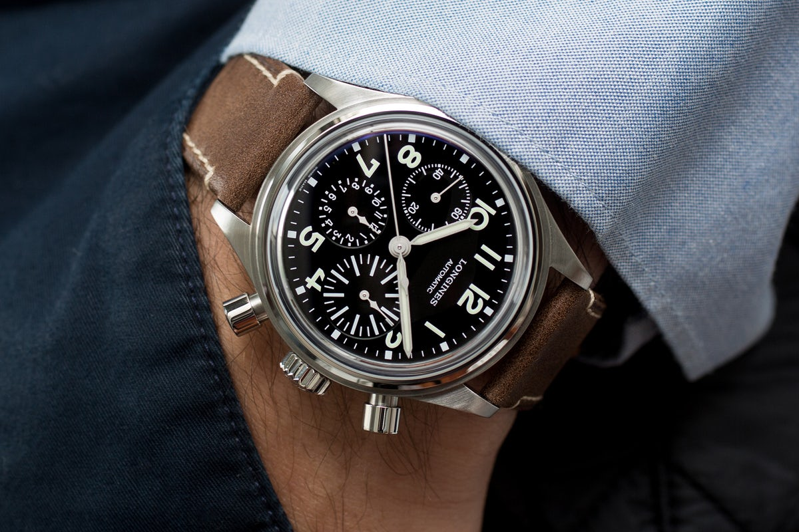
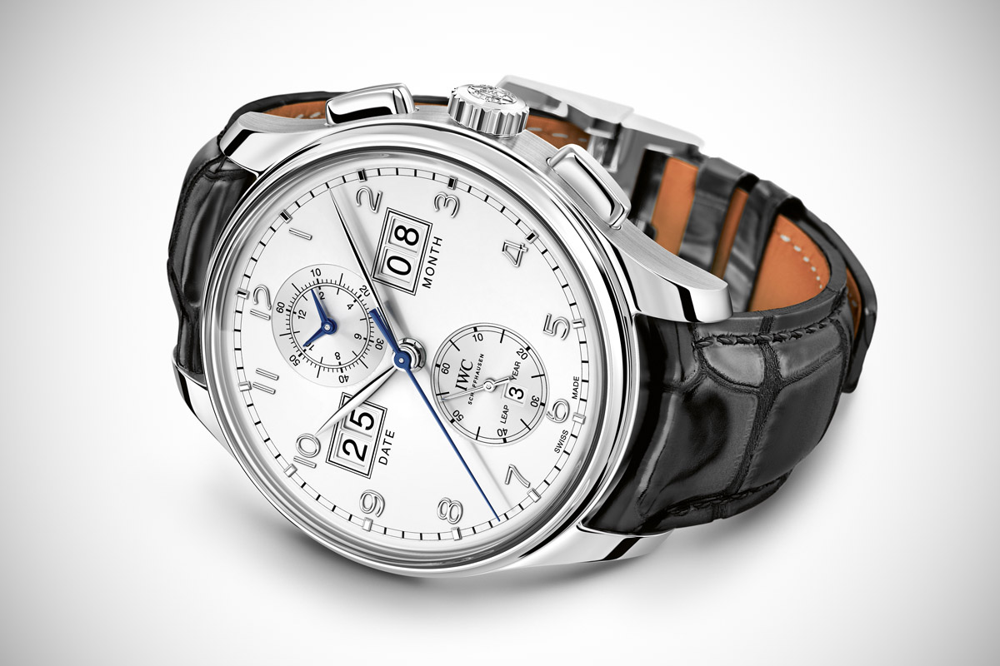
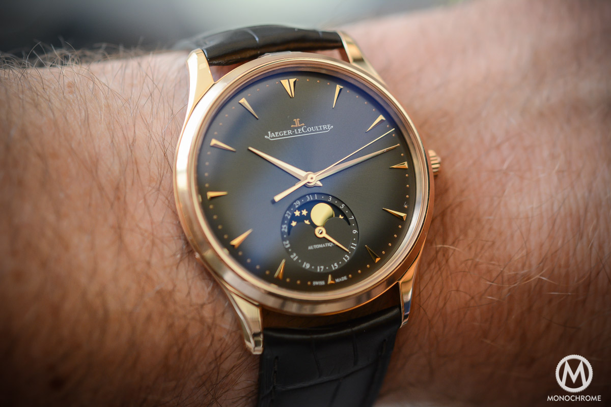
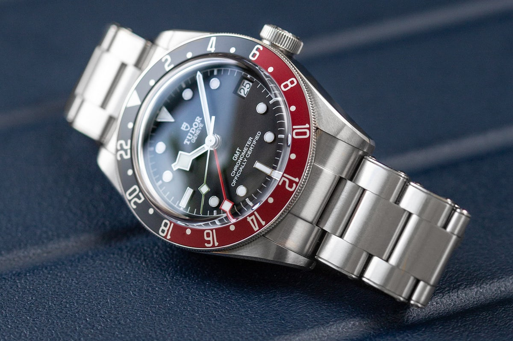
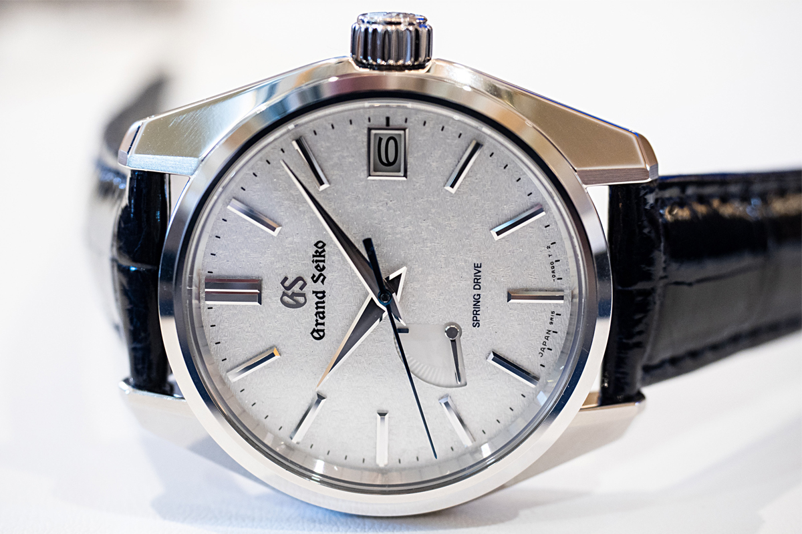
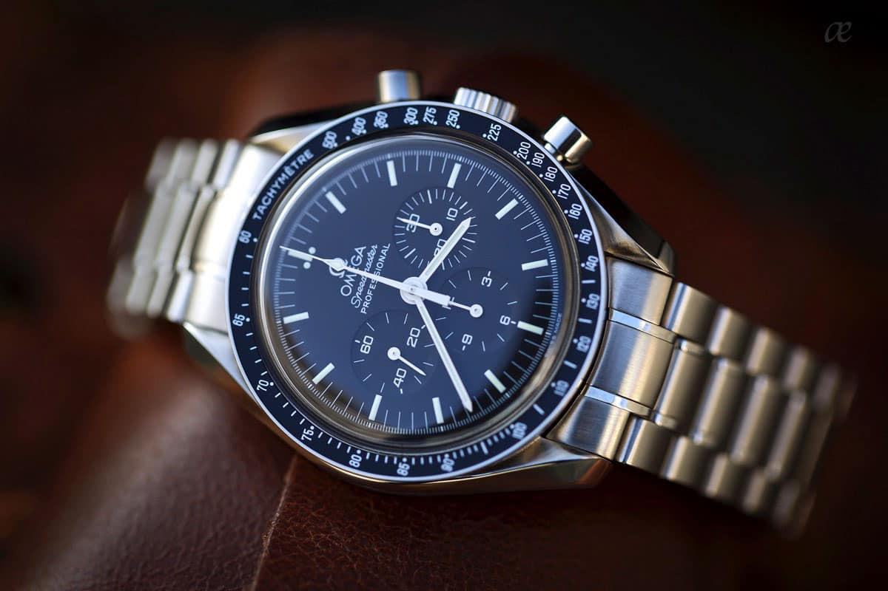
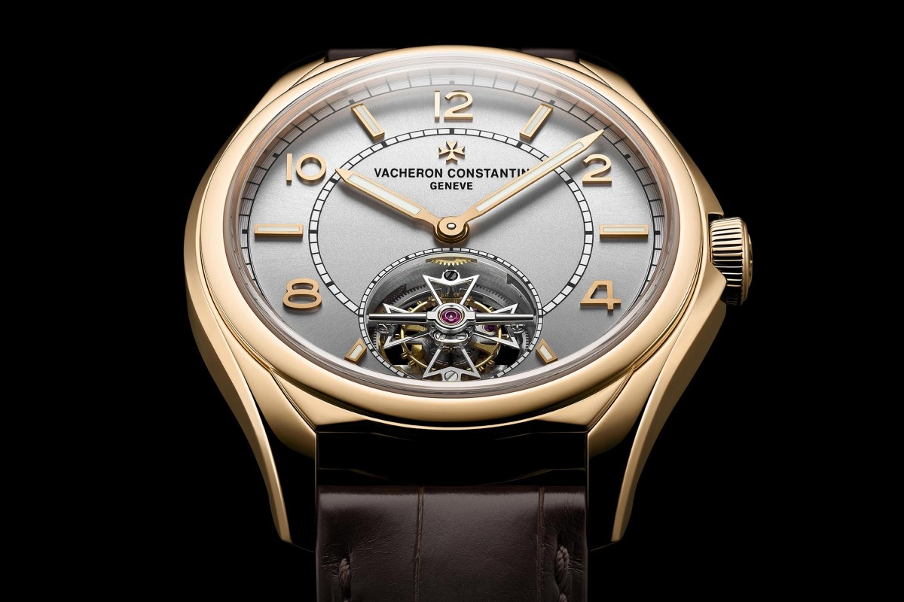

Complications
When talking about watches the term "complications" might come up,
but what does it mean?
A complication is basically another function that's been added to the watch and made the manufacturing process more "complicated". An example of this is a chronograph function, or a stop watch in more common terms. Historically these complications had an actual use in certain professions but now it's mainly about the aesthetics.
- Chronographs
- Sub dials
- Calendar
- Moon phase
- GMTs
- Power Reserve Indicators
- Bezel and chapter rings
- Tourbillons
Like I mentioned in the beginning a chronograph is basically a stop watch. Your standard chronograph is equipped with 2 pushers on the side of the case linked to the seconds hand on the watch. When you press the top pusher the seconds hand starts ticking. If you then press it again the hand will stop. From here you can choose to start it again or reset it using the bottom pusher.
This is how your run of the mill chronograph works but there are also more advanced versions. Watches equipped with a so called "flyback" chronograph do not require you to pause the seconds hand before resetting it. All you have to do is push the bottom pusher and the hand will reset.
There are also chronographs that only have one pusher, usually located on the crown. These types of chronographs are a bit more limited in functionality as they can only start, stop and then reset. This complication is quite rare and I only know of a few examples, like this one from Longines.
The most expensive chronographs are equipped with a so called "split time" or "rattrapante" function. These watches have 2 chronograph hands stacked on top of one another and when you press the disgnated pusher, one of them stops while the other continues to tick. If you press the pusher again the hand will snap back to the ticking one. You can also choose to stop both of the hand at different locations. This function is basically used to time two things at once.
A sub dial is small circle on the dial of the watch displaying more information. These are very often used together with chronographs. Since chronographs seconds hand has been replaced by the chronograph hand, manufacturers often add a sub dial to have a constantly ticking seconds hand. Chronographs usually also have a few more sub dials with information related to the actual chronograph function itself.
Sub dials is not really a complication in itself since but only a method of implementing functions on the dial. Most of the complications I will mention later on are displayed in a sub dial.
A calendar function is the most common complication on the market, in fact I would go so far as to say there are more watches with them than without.
There are many variations of this complication and the most common one is just a simple date wheel. A date wheel is a small window, generally on the right half of the watch, that only display the date. This is quite often combined with a day window next to it. These two complications are also quite ofthen be placed within sub dials.
The most expensive type of calendar is what's called a perpetual calendar. In my humble opinion, this is one of the most impressive complications to date. A perpetual calendar complication displays the current year, mont, date and day. It might not sound very impressive but when you look deeper you realise that it will keep accurate time for over 100 years without you needing to change everything. With a normal date function you will need to change it every other month due to the months not being the same length. With a perpetual calendar you won't have to woory about this as it will even take leap years into account. Due to its complexity, watches like this are usually quite expensive and going into tens of thousands of euros.
A moon phase is one of the most complicated things to get right in watchmaking. A complete mooncycle is takes about 29.5 days to complete and is therefor very difficult to measure using a wrist watch. If you instead use the number 30, as some of the more affordable alternatives do, you will end up with a very inaccurate piece without any functionality whatsoever.
The complicated moon phase is considered by most to be the least useful complication out there. We can't really use it for anything anymore and therefor it has become a complication for the sake of complication. Most of the watches that have one today are very expensive dress watches.
While the moon phase is considered the most useless complication, the GMT could the considered the most useful. A GMT watch is basically designed to display two time zones at once. The way it works is with an additional hand on the dial displaying the second time zone on a 24 hour scale.
There are also cases of time zone complications being displayed in a sub dial although these are generally not considered GMTs.
A power reserve indicator is a very self explanatory Complication. It basically displays how much of the power reserve is left. For those who might not know, the power reserve is how much "power" is left in the watch. If the power reserve runs out you have to wind the watch back up or change the battery if it's a quartz watch.
Being able to see in an instant how much power is left in your watch is very convenient. All you have to do is look at the indicator and then decide if it's time to give your watch a wind or if you should wait a bit longer.
There are a lot of different complications in this category. The most common ones are probably a dive-bezel and a tachymeter.
Dive bezels are found on dive watches (what a surprise) and are used to keep track of time. You basically turn the bezel to mark where you started and later compare the current time to the bezel. Dive bezels are usually 2 tone with one part being red. Some people have the impression that when the time is on the red part, the diver is running out of air. This is false and the second color is just aesthetic.
A tachymeter is usually found on racing or aviation watches and is used to make calculations regarding time, distance anc velocity. It usually looks like a scale along the outer parts of the dial, around the chapter ring, or it is located on top of the bezel, like on the Omega Speedmaster.
A tourbillon is the pinnacle of luxury watchmaking. Making one is extremely difficult and there are only a handful of manufacturers over the world. The function of a tourbillon is to reduce the affect of gravity on the watch movement. A mechanical movement consists of a bunch of gear, cogs and springs working together to keep track of time and the whole art of watchmaking revolves around reducing friction. Gravity had long been the one factor watchmakers would be unable to beat, but then came the tourbillon. The tourbillon allowed watchmakers to create immensly more accurate movements than they had before and you will only find them in luxury time pieces.
